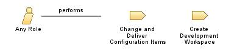

| Role: Any Role |

Relationships
 |
||
| Additionally Performs | ||
|---|---|---|
| Modifies |
|
|
Main Description
This role can be played by any member of the project team who has been assigned at least one of the other specific role. As such, the prerequisite skills required to play this role are the ability to play at least one other role, and appropriate training or experience in the project environment tools that will be used to perform the tasks assigned to this role. |
Staffing
| Skills | The skills this role needs are supplied by other roles on the project team. |
|---|---|
| Assignment Approaches | This role will be played by all members of the project team. As such, once a project team member has been assigned at least one of the other roles, they will also be assigned this role by default. |
| © Copyright IBM Corp. 1987, 2012 All Rights Reserved Property of IBM These materials are intended only for use as part of an IBM engagement |